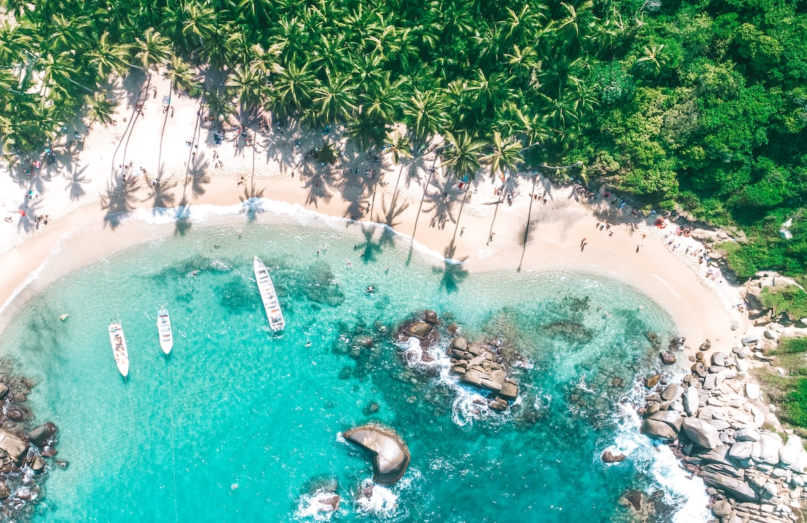
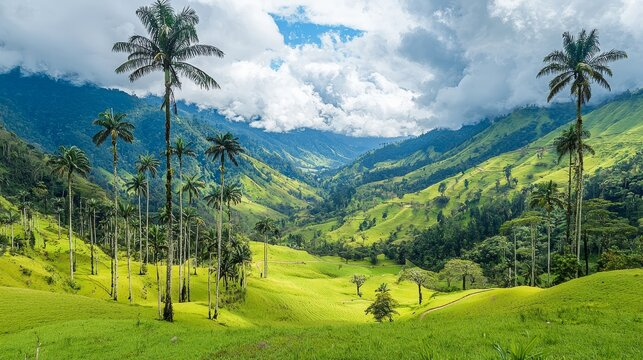

Cartagena das Índias

Uma cidade histórica fortificada à beira do Mar do Caribe, famosa por suas muralhas coloniais.
Principais Atração:
- Castillo San Felipe de Barajas
- Centro Histórico e Praças
Parque Nacional Natural Tayrona

Um parque nacional que une a floresta tropical densa com praias paradisíacas do Mar do Caribe, localizado na base da montanha Sierra Nevada de Santa Marta.
Principais Atração:
- Trilhas pela natureza
- Praias selvagens (Cabo San Juan)
Bogotá

A capital da Colômbia fica nos Andes, a mais de 2.600 metros de altitude. O bairro histórico La Candelaria reúne a arquitetura colonial e a vida cultural da cidade.
Principais Atração:
- Cerro de Monserrate (vista panorâmica da cidade)
- Museu do Ouro e Plaza de Bolívar
Vale do Cocora

Localizado na região cafeeira da Colômbia, é famoso por abrigar as gigantescas Palmeiras de Cera, a árvore nacional do país, em meio a paisagens montanhosas.
Principais Atração:
- Caminhadas entre as palmeiras gigantes
- Visitas às fazendas de café da região